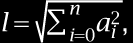
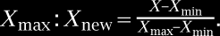
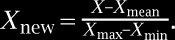
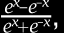
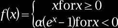
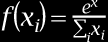
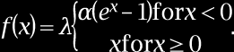

|
 (NB) where ai is attribute number i of the vector. Scaling and/or normalization may function to make vector comparison independent of absolute quantities of attributes, while preserving any dependency on similarity of attributes; this may, for instance, be advantageous where cases represented in training data are represented by different quantities of samples, which may result in proportionally equivalent vectors with divergent values. |
|
 (NB) Feature scaling may include mean normalization, which involves use of a mean value of a set and/or subset of values, Xmean with maximum and minimum values: |
|
 (NB) Feature scaling may include standardization, where a difference between X and Xmean is divided by a standard deviation σ of a set or subset of values: |
|
(NB) Scaling may be performed using a median value of a a set or subset Xmedian and/or interquartile range (IQR), which represents the difference between the 25th percentile value and the 50th percentile value (or closest values thereto by a rounding protocol), such as: |
|
(NB) Persons skilled in the art, upon reviewing the entirety of this disclosure, will be aware of various alternative or additional approaches that may be used for feature scaling. |
|
 (NB) a tanh derivative function such as f(x)=tanh2(x), a rectified linear unit function such as f(x)=max(0, x), a “leaky” and/or “parametric” rectified linear unit function such as f(x)=max(ax, x) for some a, an exponential linear units function such as |
|
 (NB) for some value of a (this function may be replaced and/or weighted by its own derivative in some embodiments), a softmax function such as |
|
 (NB) where the inputs to an instant layer are xi, a swish function such as f(x)=x*sigmoid(x), a Gaussian error linear unit function such as f(x)=a(1+tanh(√{square root over (2/π)}(x+bxr))) for some values of a, b, and r, and/or a scaled exponential linear unit function such as |
|
 (NB) Fundamentally, there is no limit to the nature of functions of inputs xi that may be used as activation functions. As a non-limiting and illustrative example, node may perform a weighted sum of inputs using weights wi that are multiplied by respective inputs xi. Additionally or alternatively, a bias b may be added to the weighted sum of the inputs such that an offset is added to each unit in the neural network layer that is independent of the input to the layer. The weighted sum may then be input into a function p, which may generate one or more outputs y. Weight wi applied to an input xi may indicate whether the input is “excitatory,” indicating that it has strong influence on the one or more outputs y, for instance by the corresponding weight having a large numerical value, and/or a “inhibitory,” indicating it has a weak effect influence on the one more inputs y, for instance by the corresponding weight having a small numerical value. The values of weights wi may be determined by training a neural network using training data, which may be performed using any suitable process as described above. |